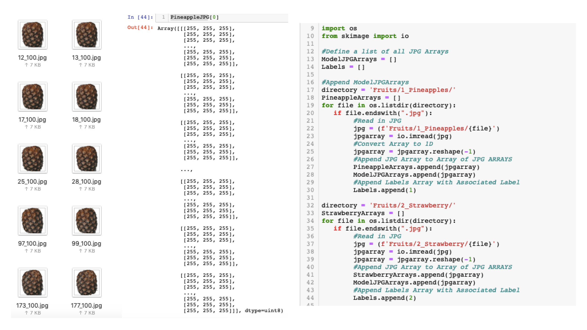
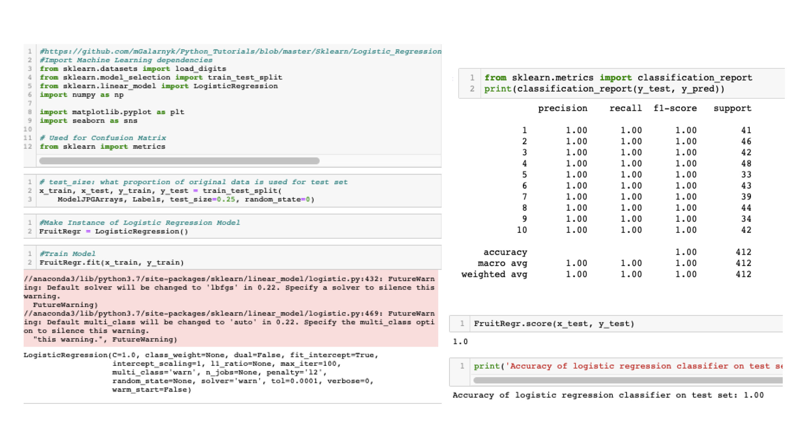
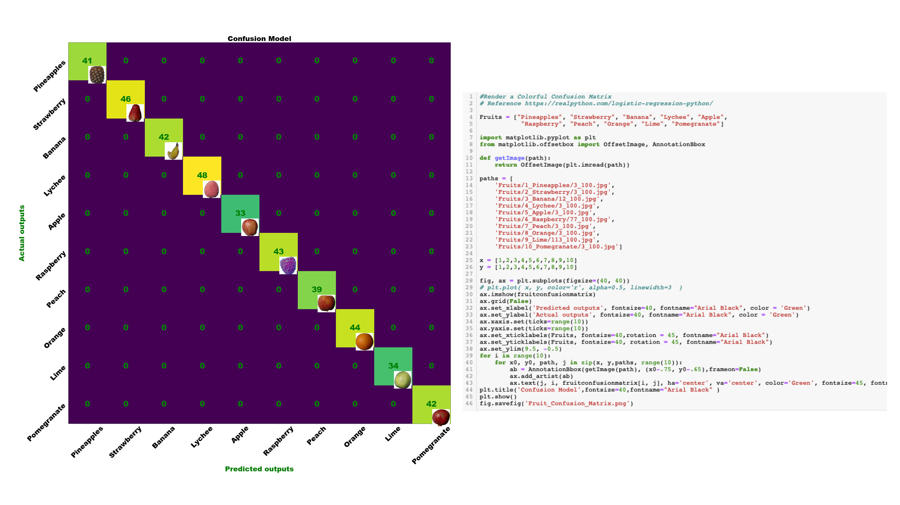
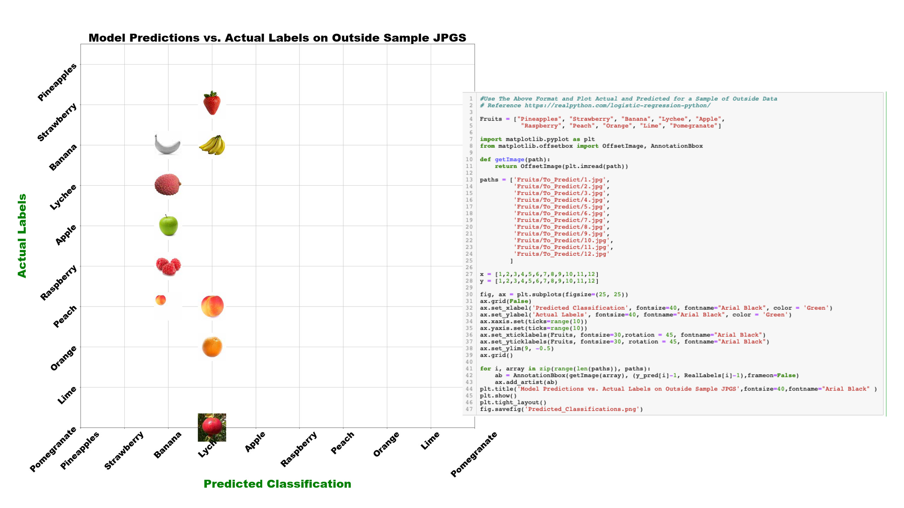

Home
Comparisons
Sources
Machine Learning Models
Sequential Model (CNN)
Logistic Regression
Recurrent Neural Networks (rNN)
k-Nearest Neighbours (kNN)
Logistic Regression:
A predictive analysis algorithm based on the concept of probability.
JPG Dataset to Arrays

Model Fit Predict

Confusion Model

Outside Sample Prediction
